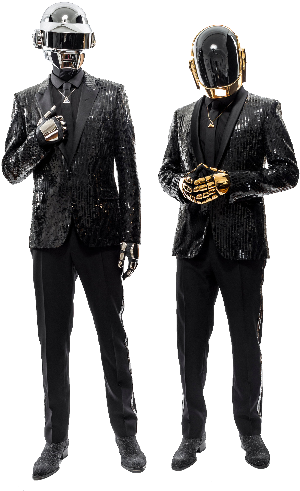

Biografia
Daft Punk es un dúo musical formado por los músicos franceses Guy-Manuel de Homem-Christo (n. 1974) y Thomas Bangalter (n. 1975).456 Daft Punk alcanzó una gran popularidad en el estilo house a mediados de la década de los años 1990 en Francia y continuó con su éxito los años siguientes, usando el estilo synthpop.457 El dúo también es acreditado por la producción de canciones que se consideran esenciales en el estilo french house.
Discografía
Random Access Memories

Discovery (2001)

Tron: Legacy

Top canciones segun Spotify
Spotify

